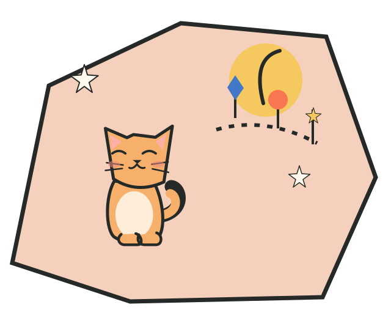
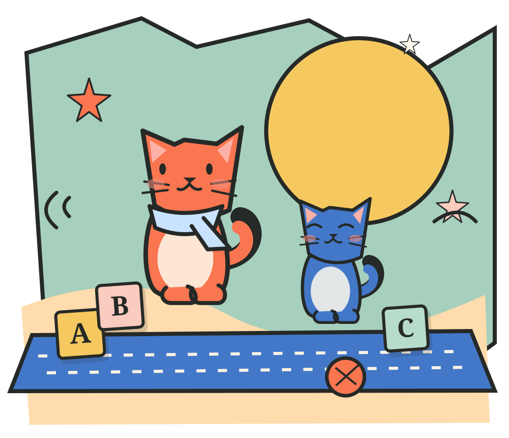
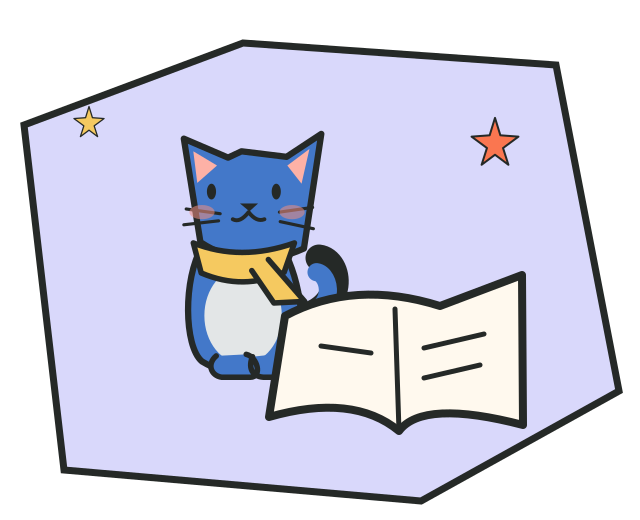
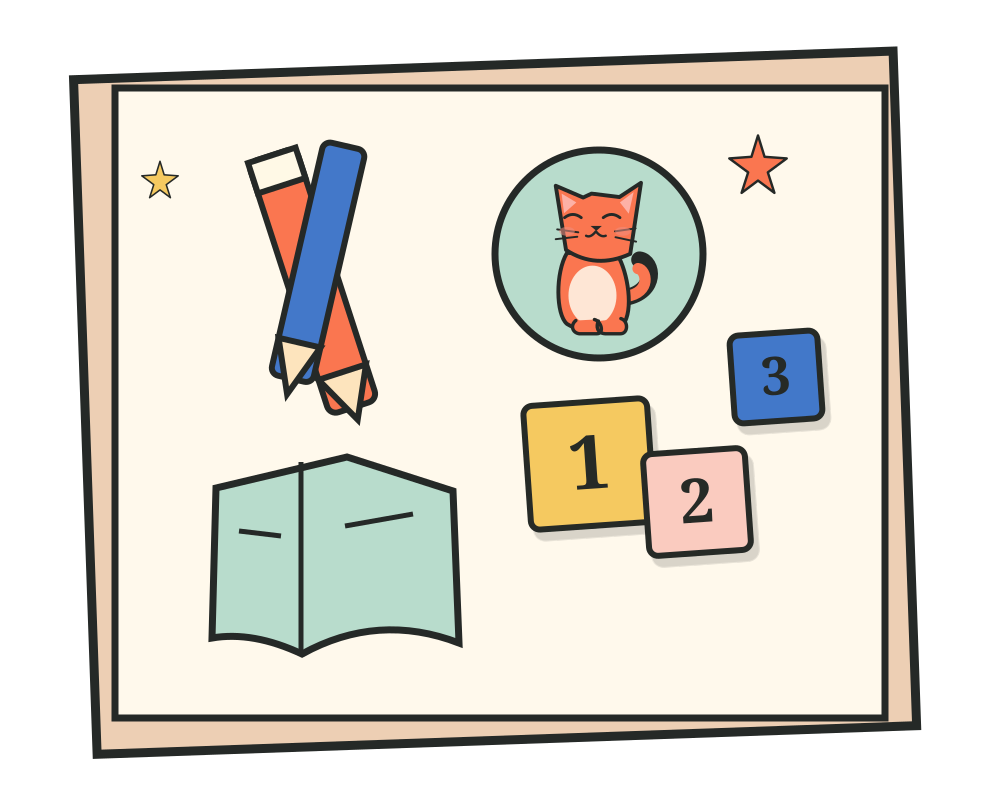

01 / THREE

0–11 months
Infants
From the earliest sounds to the first milestones, every family has its own list of questions about care.
Explore this chapterA little space for the very first chapters. Discover the ages listed for care, the weekday details, and how to start a conversation with Little Cats Childcare LLC.

Those first few years are full of change. Start with the three age ranges listed by Oklahoma Human Services, then ask the center about current openings and everyday routines.

0–11 months
From the earliest sounds to the first milestones, every family has its own list of questions about care.
Explore this chapter
12–23 months
New words, little steps and big discoveries make this a busy stage to plan around.
Explore this chapter
2–4 years
Stories, growing independence and friendships are some of the things families may want to discuss.
Explore this chapter
A LITTLE SOMETHING EXTRA ✷Care is personal. Whether you're planning for naps, a new routine, or a preschooler's growing independence, the best next step is a real conversation about your child.
Wondering about drop-off, rest time, tuition or what's needed to enroll? We've organized the questions families most often need answered—all in one place.
Open the question bookStart with one easy conversation.